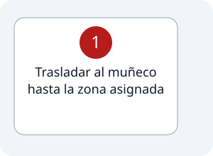

1
Estación #4
Rescate de víctima.
Recorrido de la estación

Pasos
Indicaciones
- * El muñeco debe ser agarrado por debajo de las axilas, y debe ser trasladado de espalda hacia la meta.
- * Si no es agarrado correctamente, 5 segundos de penalización.
- * Salirse de la zona del recorrido (alfombra) dará una penalización de 5 segundos.
- * Tanto el participante como la víctima deben pasar juntas la zona de meta (hasta los pies de la víctima).
- * Caída del participante o la víctima luego de pasar la línea de llegada dará 5 segundos de penalización; se debe soltar el muñeco suavemente.
- * Se puede hacer un cambio de participante durante la estación, pero añadirá 5 segundos de penalización, más el tiempo que se demore en entrar el cambio desde el llamado.